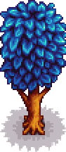
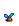
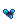
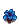
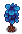
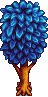
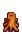

Mystic Tree
| Mystic Tree | |
 | |
| Information | |
| Seed | |
| Tapper Product | |
| Growth Time | Variable |
A Mystic Tree is a tree that grows from a Mystic Tree Seed. The crafting recipe for the seed becomes available after Foraging Mastery is claimed. The tree yields Mystic Syrup every 7 days when tapped (3 days with a Heavy Tapper). It can be chopped down with an axe, producing 7-11 Hardwood, plus 1 Hardwood from the stump.
By default, Mystic Trees have a 15% chance to grow to the next stage each night during Spring, Summer, or Fall. With Tree Fertilizer, Mystic Trees have a 30% chance to grow to the next stage each night, including during Winter.[1] This means that unfertilized mystic trees usually grow in 26±12 days, while fertilized ones usually grow in 13±5 days. Mystic Tree Seeds cannot be planted around the border of the Greenhouse.
Unlike other trees, Mystic Trees do not spread seeds on their own. Their seeds also do not drop when shaken or chopped. The tree will interact with Mushroom Logs to make more Purple Mushrooms available for harvest.
Stages of Growth
| Stage 1 | Stage 2 | Stage 3 | Stage 4 | Stage 5 | Stump |
|---|---|---|---|---|---|
 |
 |
 |
 |
 |
 |
References
- ↑ See Content\Data\WildTrees.xnb in the game code.
History
- 1.6: Introduced.
| Trees | |
|---|---|
| Trees | Green Rain Trees • Mahogany Tree • Maple Tree • Mushroom Tree • Mystic Tree • Oak Tree • Palm Tree • Pine Tree |
| Fruit Trees | Apple Tree • Apricot Tree • Banana Tree • Cherry Tree • Mango Tree • Orange Tree • Peach Tree • Pomegranate Tree |
| Seeds | Acorn • Mahogany Seed • Maple Seed • Mossy Seed • Mushroom Tree Seed • Pine Cone • Mystic Tree Seed |
| Fruit | Apple • Apricot • Banana • Cherry • Mango • Orange • Peach • Pomegranate |
| Misc | Large Log • Large Stump • Tea Bush |